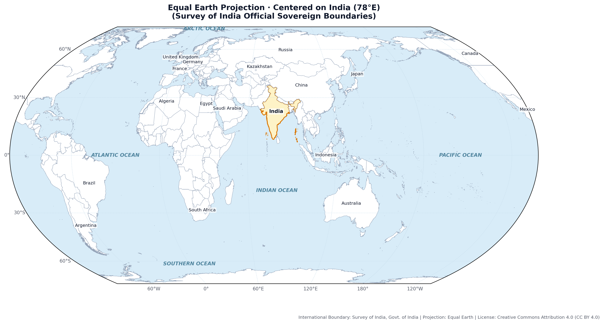
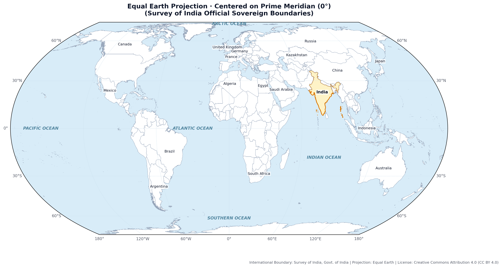
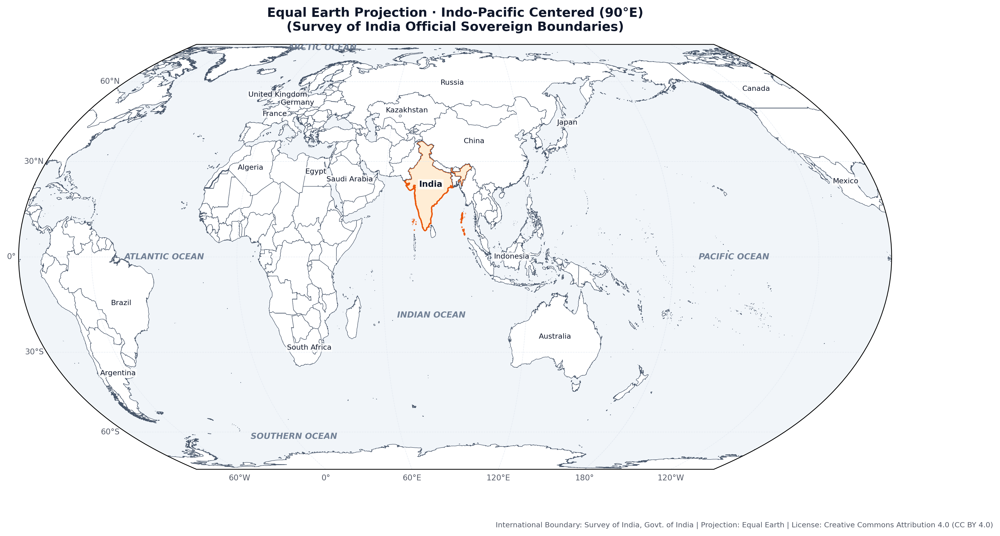
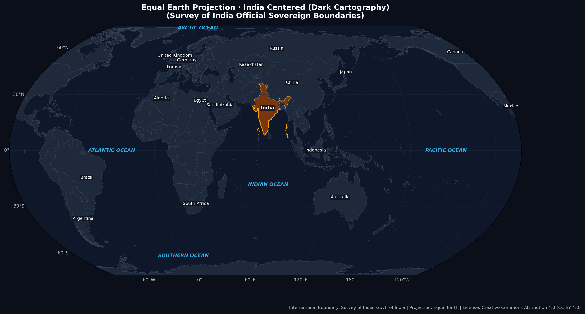
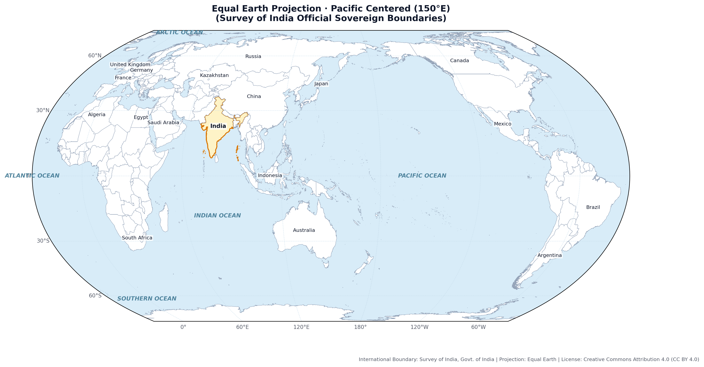
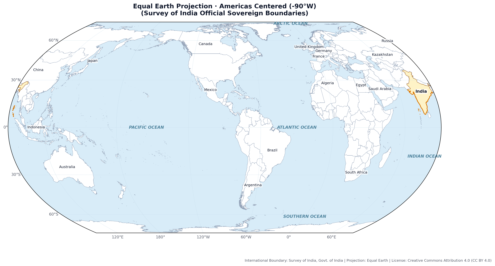

Open-source, high-resolution Equal Earth maps created with the official Survey of India boundary. Free for academic publication, journalism, digital encyclopedias, and open-source cartography under CC BY 4.0.

Standard official Indian perspective placing India squarely at the central meridian.

Standard international 0° meridian view with correct Survey of India boundaries.

Optimized for Indo-Pacific geopolitical and maritime analysis.

Modern dark-mode aesthetic for presentations and high-contrast digital displays.

Pacific-centric projection with unbroken Asian and American landmasses.

Western Hemisphere view showcasing Asian-American connections.
All maps in this gallery are released under Creative Commons Attribution 4.0 International (CC BY 4.0). You may freely share, republish, adapt, and use them in books, articles, websites, and broadcasts.
Map Title: Equal Earth Projection (Centered on India / World) Data Attribution: Survey of India, Government of India (International Boundaries) Projection: Equal Earth (Bojan Šavrič, Tom Patterson, Bernhard Jenny, 2018) License: Creative Commons Attribution 4.0 International (CC BY 4.0)